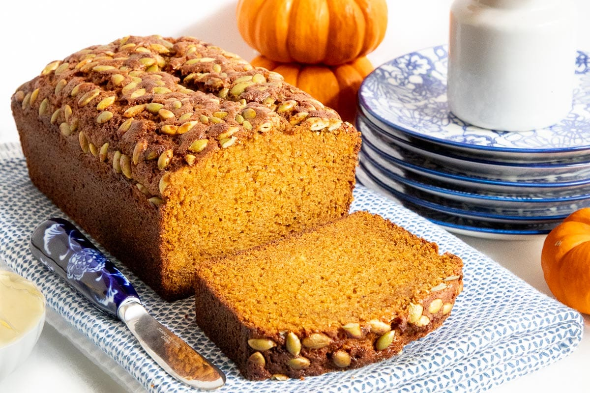
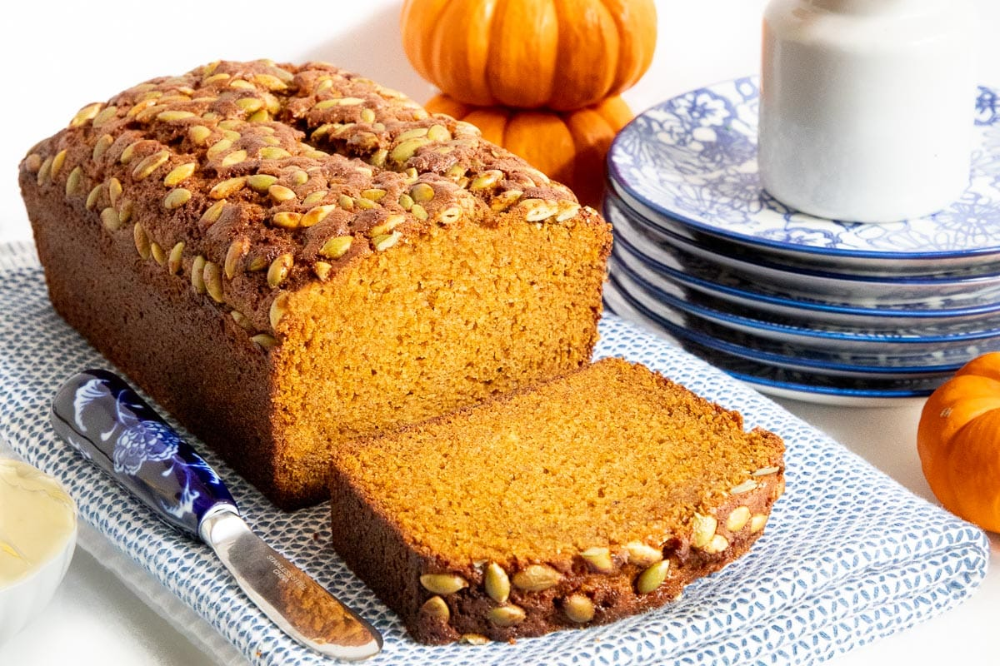

Welcome to Pumpkin Loaf Bakery
Pumpkin Loaves (Our Specialty Menu)
| Name | Description | Price |
|---|---|---|
| Nutmeg Pumpkin Loaf | Our classic loaf with a nutty twist, good for all you nuts out there! (contains: nuts, do not consume if you are allergic to nuts) | $5.95 |
| Vanilla Glazed Loaf | If the classic loaf isn't sweet enough for you, try our classic loaf drizzled with vanilla bean sweet glaze. | $4.95 |
| Cinnamon Snap Loaf | Classic loaf with a warm cinnamon blend and slight notes of peppermint. | $6.95 |

 


Click to slide down panel
We are a small, locally run and operated business on the corner of High Street and S Poplar Street in the historic downtown of Oxford, Ohio. We believe that customers should be able to taste the heart, soul, and passion put into each of our products, which is why we make everything in-house but our heavily renowned pastry chefs. We can pridefully say all of our ingredients come from the local Oxford area, because we are committed to supporting a greater cause and giving back to the community who has truly given us everything. Serving the Oxford Community since 2002, and committed to continue servicing for more to come!